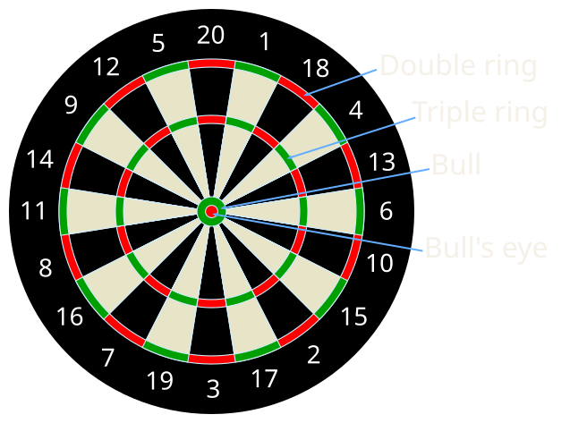
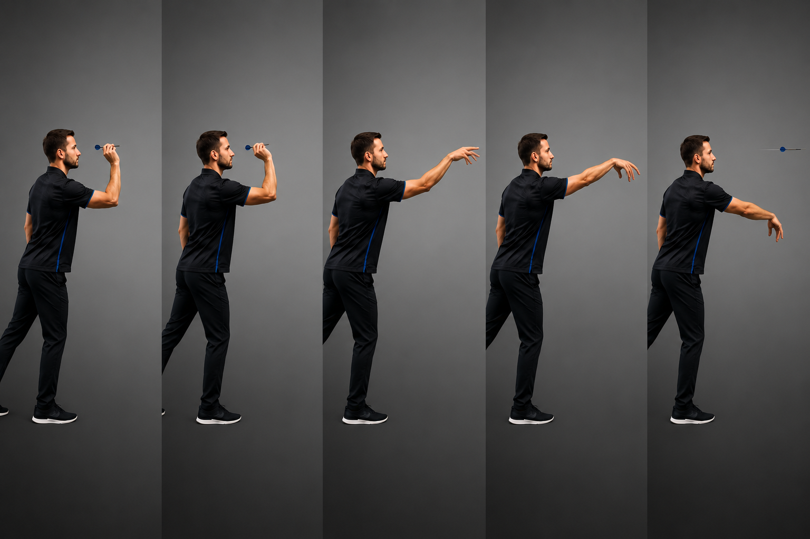
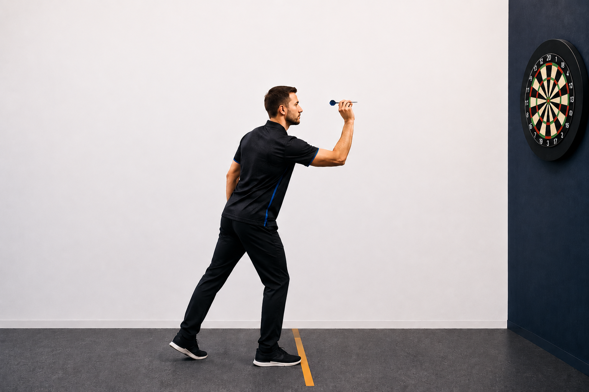
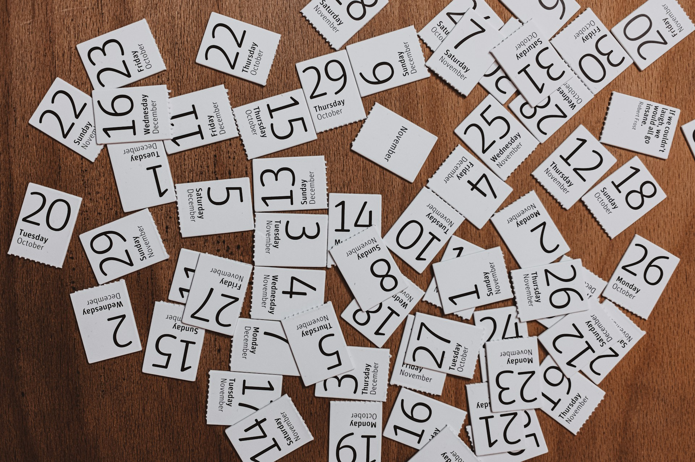

Connaître les zones de la cible

Created by Tijmen Stam in Inkscape

Created by Tijmen Stam in Inkscape
Placez votre cible à une hauteur de 1,73 m, mesurée depuis le centre de la double bull. Positionnez-vous ensuite à une distance de 2,37 m de la cible.
Jouer à cette distance améliorera votre précision et vous évitera les mauvaises surprises si vous jouez en club ou dans un bar.

Image générée par IA
Le mouvement doit venir principalement de l'avant-bras. Relâchez la fléchette en douceur en tendant le bras vers la cible, sans mouvements brusques.

Image générée par IA
Placez un pied devant l'autre derrière la ligne de lancer (l'oche). Gardez le corps stable et légèrement incliné vers l'avant pour favoriser l'équilibre.

Image générée par IA
La précision s'améliore avec une pratique régulière. Essayez de lancer toujours avec le même geste afin de développer une bonne constance.

Photo de Claudio Schwarz sur Unsplash